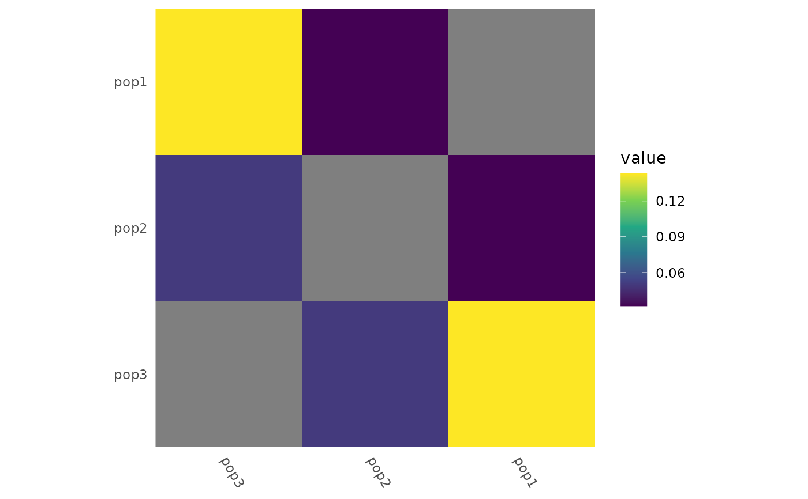
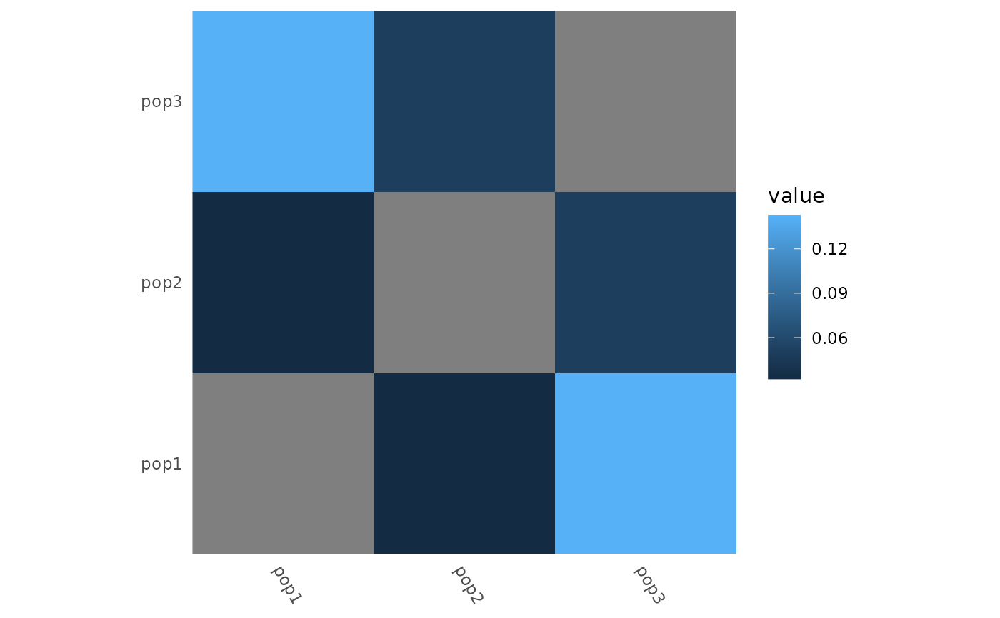
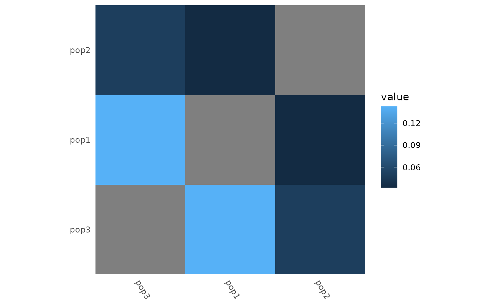

Plot a square heatmap from either a full symmetric distance matrix or a tidy
tibble of distances. Rows and columns can optionally be reordered using
either an explicit ordering vector or a function that computes an ordering
(e.g. hierarchical clustering). Dendrograms can be added to the heatmap with
heatmap_add_dendro(). Note that any decoration (e.g. axis labels, fill
scale) should be added to the heatmap before adding dendrograms, as the
latter will modify the plot structure and make it difficult to add further
customization afterwards.
Arguments
- x
A square numeric matrix OR a data.frame/tibble with 3 columns: names1, names2, value (half-matrix representation).
- order
Optional ordering specification. Can be:
NULL(default): preserve the existing order.A character vector containing all row/column names in the desired order.
A function taking the matrix
xas input and returning either:an ordering vector of indices, or
an object with an
ordercomponent (e.g. fromstats::hclust()).
Examples
example_gt <- load_example_gt("gen_tbl")
# With a pairwise matrix:
fst_dist <- example_gt %>%
group_by(population) %>%
pairwise_pop_fst(method = "Nei87", type = "pairwise")
heatmap_pairwise(fst_dist)
 # Explicit ordering
heatmap_pairwise(
fst_dist,
order = rev(rownames(fst_dist))
) +
ggplot2::scale_fill_viridis_c()
# Explicit ordering
heatmap_pairwise(
fst_dist,
order = rev(rownames(fst_dist))
) +
ggplot2::scale_fill_viridis_c()

# Hierarchical clustering
heatmap_pairwise(
fst_dist,
order = function(x) {
stats::hclust(stats::as.dist(x), method = "complete")
}
)
 # With a tidy tibble of distances:
fst_tidy <- example_gt %>%
group_by(population) %>%
pairwise_pop_fst(method = "Nei87", type = "tidy")
heatmap_pairwise(fst_tidy)
# With a tidy tibble of distances:
fst_tidy <- example_gt %>%
group_by(population) %>%
pairwise_pop_fst(method = "Nei87", type = "tidy")
heatmap_pairwise(fst_tidy)

heatmap_pairwise(
fst_tidy,
order = function(x) {
stats::hclust(stats::as.dist(x))
}
)
